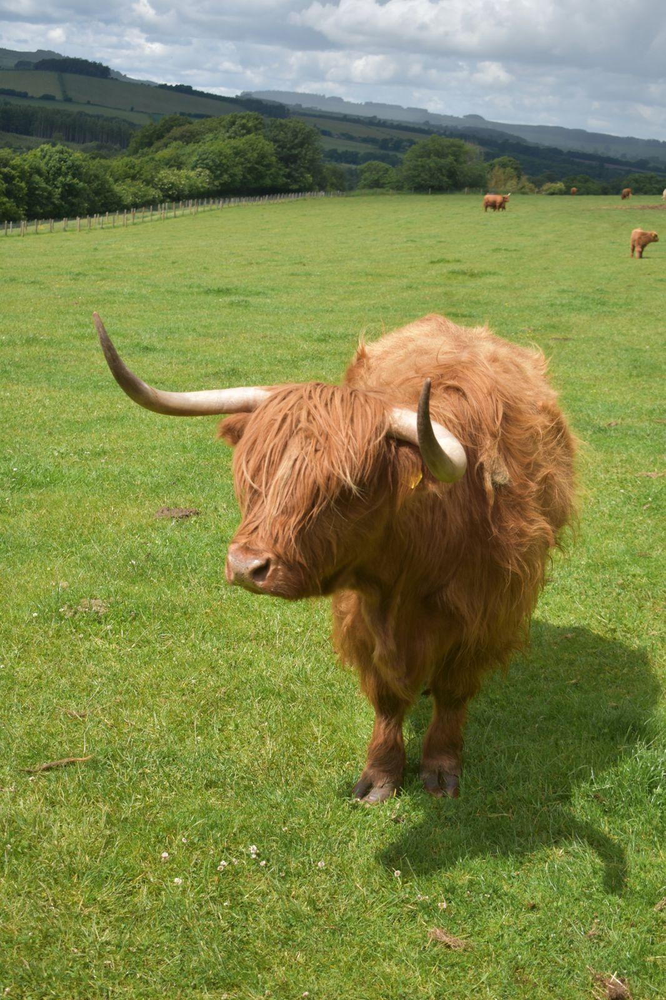

Living systems already solved it. We help you build it.
Nexus Lab Space is an R&D studio that creates solutions for hard challenges that product designers, experience designers, and communities face. We look to nature for the answer, often in the most unlikely places.
Fig. 01aHummingbird, photographed in Costa Rica. Its green comes from structure, not green pigment.Fig. 01bThe same color, computed. Light reflecting off thin keratin layers in each barb interferes, so the hue shifts as the angle changes. Move across the plate to tilt it.OriginField case study · Costa RicaLevel of realization
In-field case study
Concept
Prototyped
Working prototype
Testing
Produced at scale
FunctionMake color without dye.
Nature Education
Bioinspiration from HONEYBEES
Apis mellifera (western honey bee)
The waggle dance sends one clear message through sound, scent, and movement
Drag to rotate the deviceTwo provisional patents pending
ChallengeKids learn best when a lesson is targeted, not broad, and reinforced through more than one sense. LeafQuest focuses on leaves and three traits that change across ecosystems.Fig. 02aWestern honey bee, modeled. A forager with one clear goal sends a short, multisensory waggle dance and repeats it until enough followers respond.Fig. 02bLeafQuest, a nature-education game. Players compare leaf shape, margin, and venation, and the device answers with light and sound right away, in small steps a child can follow.OriginInternal projectLevel of realization
In-field case study
Concept
Prototyped
Working prototype
Testing
Produced at scale
Patent pending · two provisional applications filedFunctionSelf-organize.
Filtration
Bioinspiration from WHALE SHARK
Example from nature
03b · Modeled live03a · Observed
θ 15°mesh open 100%to throat 0
15°
Fig. 03aA whale shark feeding near La Paz, Mexico. Filmed by my good friend and colleague Nicholas Heier.Fig. 03bThe same filter, simulated. When water sweeps across the mesh, plankton rolls along to the throat and the pores stay clear. Turn the flow straight into the mesh and it clogs. Move across the plate to change the angle.OriginField case study · La Paz, MexicoLevel of realization
In-field case study
Concept
Prototyped
Working prototype
Testing
Produced at scale
FunctionFilter huge volumes without clogging.
Drone Show Safety
Bioinspiration from ELECTRIC FISH
Eigenmannia virescens (glass knifefish)
Shifts its electric signal away from a neighbor's so neither one is jammed
01a · Electric fish jamming avoidance · modeled01a · Electric fish
Electric fishSensessensesshiftsholds
Electric fish · senses
ChallengeDrone light shows depend on radio links between hundreds of drones and a ground station. Interference on a shared channel can drop those links, and the formation has to stay safe for the audience watching nearby.Fig. 01aEigenmannia virescens, modeled. When a neighbor's electric signal is close to its own frequency, each fish shifts its frequency away from the other: the higher one goes higher, the lower one goes lower.Fig. 01bDrone show safety concept. Neighboring drones that detect interference move to radio channels further apart, in opposite directions, so links stay clear and the formation holds.OriginInternal conceptLevel of realization
In-field case study
Concept
Prototyped
Working prototype
Testing
Produced at scale
FunctionAvoid signal interference.
Communication
Bioinspiration from RAVEN
Example from nature
04b · Modeled live · spectrogram04a · Observed
time 0.0 sbetween callspeak –
0.0 s
Fig. 04aA raven calling from a rooftop beam in Santa Fe, New Mexico: three pairs of croaks in nine seconds. Filmed by the author.Fig. 04bThe same calls, as a spectrogram drawn from this recording. Each croak is a stack of low harmonics near 1 kHz, a low, rich pitch that carries well in open air. Move across the plate to scrub through the recording.OriginField case studyLevel of realization
In-field case study
Concept
Prototyped
Working prototype
Testing
Produced at scale
FunctionSend a clear signal over distance.
Hurricane Preparedness
Bioinspiration from MOLD
Aspergillus, Penicillium, Cladosporium, and Stachybotrys (black mold)
Common in flooded New Orleans homes after hurricanes
MoldAbsorbsabsorbsstoresspreadsMold breaks down soaked wood and food and absorbs the nutrients.
Mold · absorbs
ChallengeHurricanes knock out power, and people need fuel to run generators, chainsaws, and boats. During a storm, gas stations often run out.Fig. 03aMold, magnified. It absorbs nutrients from soaked material, stores them as reserves, then spreads while conditions stay damp. The spreading is what people see.Fig. 03bWe asked the community what thrived during a hurricane, and modeled their energy reserves and distribution after their answer, mold. One hurricane's waste is absorbed at a year-round center and stored as fuel, then spread out in canisters to generators, boats, and chainsaws when the next storm hits.OriginPartner project · Biomimicry 3.8, Biomimicry Professionals program · Taproot EarthLevel of realization
In-field case study
Concept
Prototyped
Working prototype
Testing
Produced at scale
FunctionStore and distribute energy.
Collaborative Civic Planning
Bioinspiration from FUNGAL NETWORKS
Phanerochaete velutina (a cord-forming wood-decay fungus)
Links fallen logs, twigs, and leaf litter across the forest floor into one network
ChallengeCities often offer one parcel and ask for pitches. Better plans come from seeing the whole system: environmental conditions, a block's economic challenges, and what residents want. General-purpose AI chatbots can sound certain while inventing details about a place, so the facts need to come first.Fig. 04aPhanerochaete velutina, modeled. A fungus that decomposes fallen wood and moves nutrients through one network linking many resources on the forest floor.Fig. 04bUrban Nexus, an AI-assisted spatial evidence platform built from the ground up on verified local data. It reports the facts about a city and does not suggest solutions. The civic planner side is built; the community chatbot is in development.OriginInternal projectLevel of realization
In-field case study
Concept
Prototyped
Working prototype
Testing
Produced at scale
Life's PrincipleBe locally attuned and responsive.
Insulation
Bioinspiration from HIGHLAND CATTLE
Example from nature
02b · Modeled live · thermal

02a · Observed
coat 9 cmair −6 °C · windheat loss 25 W/m²
9 cm
Fig. 02aHighland cattle in Scotland, where winters are wet, windy, and cold.Fig. 02bThe coat, as a thermal camera would see it. Oily guard hairs shed the rain while the undercoat holds still air, so the outside of the coat stays nearly as cold as the weather. Move across the plate to change the coat depth.OriginField case study · ScotlandLevel of realization
In-field case study
Concept
Prototyped
Working prototype
Testing
Produced at scale
FunctionStay warm and dry without burning extra energy.
BiomimicrySystems designProduct prototypingLearning experiencesSocial innovationWorkshops and talksGuided nature walksBiomimicrySystems designProduct prototypingLearning experiencesSocial innovationWorkshops and talksGuided nature walks
NXS // Lab ⟷ SpaceSplit rotary · liveLab · emulate functionSpace · learn from form
Lab and Space
Two halves of one studio.
The Lab is biomimicry and incubation: emulating how nature works, then building and iterating it with clients. The Space is biomorphic and biophilic design: nature's form, and learning from it together outdoors. Each half reads top to bottom, from concepts, to work in development, to work out in the world.
Lab
Biomimicry and incubation
Emulating how nature works.
LabSpace
Outer · concepts
Middle · in development
Center · realized
Space
Biomorphic and biophilic
Nature's form, and our connection to it.
Grab either half of the dial and turn it to flip that side. You can also tap a ring, drag the cards, or use the arrows.
Biomimicry and incubation
Emulating how nature works.
Case studies and concepts
PartnerConcept · step 2 of 6Storm Fuel · Slidell, Louisiana
A community biofuel center modeled on how mold stores and distributes energy, for the days after a hurricane.
InternalConcept · step 2 of 6Drone show safety
Neighboring drones that detect interference move to radio channels further apart, so links stay clear and the formation holds.
In development
InternalWorking prototype · step 4 of 6Urban Nexus
A spatial evidence platform built on verified local data that shows civic teams where resources are thin.
InternalTesting · step 5 of 6LeafQuest
An NFC nature-education game that teaches systems design and evolution through leaf shape, margin and venation.
Patent pending · two provisional applications filed
SealedMore projects under wraps
Work under patent or confidentiality. It exists, and the details stay private until filings allow. Ask about it on a framing call.
Realized
Next to land here
Installed, launched and public work from the Lab will be listed here.
Biomorphic and biophilic
Nature's form, and our connection to it.
Case studies and concepts
Next to land here
Community concepts and studies of nature's form will be listed here.
In development
InternalTesting with artistsMicroscope brushes for Procreate
A brush set built from textures captured under the microscope, with custom grain images and shape stamps.
SealedMore projects under wraps
Work under patent or confidentiality. It exists, and the details stay private until filings allow. Ask about it on a framing call.
Realized
Next to land here
Installed, launched and public work from the Space will be listed here.
Explore the studio
Where to go next.
Each part of the studio has its own page, so you can take it one piece at a time.